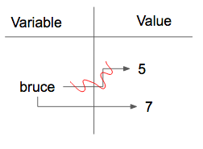

2.12. Reassignment¶
As we have mentioned previously, it is legal to make more than one assignment to the same variable. A new assignment makes an existing variable refer to a new value (and stop referring to the old value).
The first time bruce is
printed, its value is 5, and the second time, its value is 7. The assignment statement changes
the value (the object) that bruce refers to.
Here is what reassignment looks like in a reference diagram:
It is important to note that in mathematics, a statement of equality is always true. If a is equal to b
now, then a will always equal to b. In Python (and other programming languages), an assignment statement can make
two variables refer to the same object and therefore have the same value. They appear to be equal. However, because of the possibility of reassignment,
they don’t have to stay that way:
Line 4 changes the value of a but does not change the value of
b, so they are no longer equal. We will have much more to say about equality in a later chapter.
2.12.1. Developing your mental model of How Python Evaluates¶
It’s important to start to develop a good mental model of the steps the Python interpreter takes when evaluating an assignment statement. In an assignment statement, the interpreter first evaluates the code on the right hand side of the assignment operator. It then gives a name to whatever that is. The (very short) visualization below shows what is happening.
b = a
In the first statement a = 5 the literal number 5 evaluates to 5, and is given the name a. In the second statement, the variable a evaluates to 5 and so 5 now ends up with a second name b.
You can step through the code and see how the variable assignments change below.
Activity: CodeLens 2.12.1.2 (clens2_12_1)
Note
In some programming languages, a different
symbol is used for assignment, such as <- or :=. The intent is
that this will help to avoid confusion. Python
chose to use the tokens = for assignment, and == for equality. This is a popular
choice also found in languages like C, C++, Java, and C#.
The following turtle example shows some variables used for drawing, but between each use, the variables have their values changed.
In the above example, the turtle keeps going to the x and y coordinates, but those coordinates are updated, so the turtle draws a different line each time from the center of the screen.
Check your understanding
- x is 15 and y is 15
- Look at the last assignment statement which gives x a different value.
- x is 22 and y is 22
- No, x and y are two separate variables. Just because x changes in the last assignment statement, it does not change the value that was copied into y in the second statement.
- x is 15 and y is 22
- Look at the last assignment statement, which reassigns x, and not y.
- x is 22 and y is 15
- Yes, x has the value 22 and y the value 15.
After the following statements, what are the values of x and y?
x = 15
y = x
x = 22